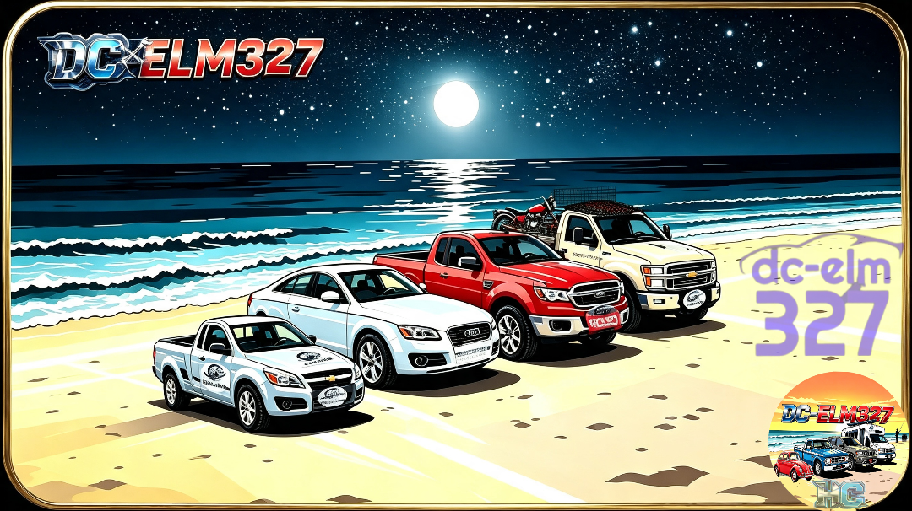
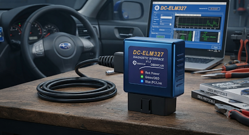
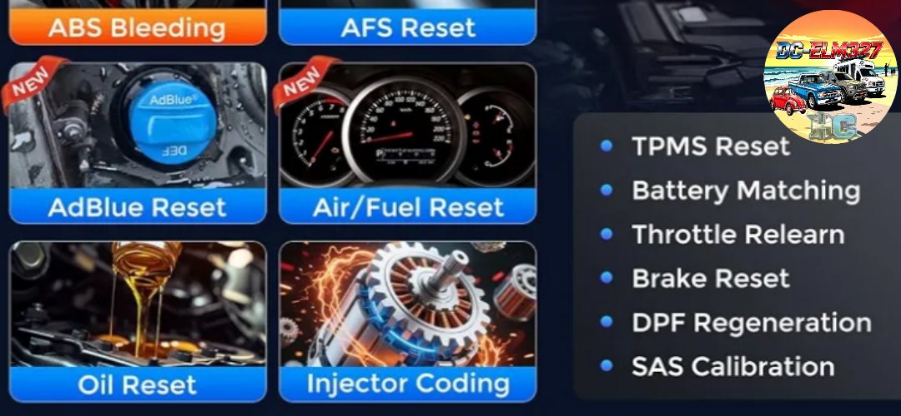
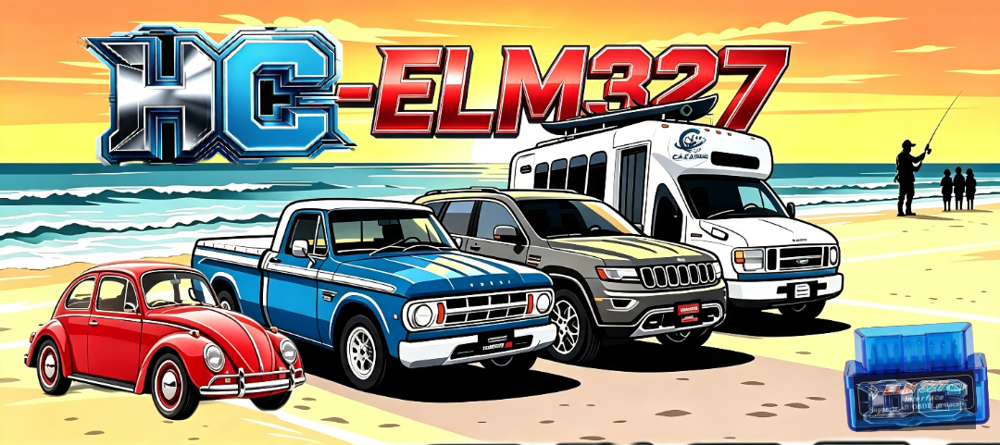

DC-carECU
Diagnóstico automotriz · Tu vehículo, bajo cualquier cielo
🚗 Diagnóstico en la palma de tu mano
Conecta tu celular con el adaptador ELM327 por Bluetooth y consulta en tiempo real los datos de sensores, códigos de falla, mantenimiento y rendimiento del motor.
🔧 SIMULADOR DE CONEXIÓN ECU
Prueba el flujo de conexión y monitoreo desde esta página.
PASO 1 — Bluetooth
Esperando acción...
PASO 2 — Inicialización
Enviando comandos...
PASO 3 — Comunicación con ECU
Detectando protocolo...
PASO 4 — MONITOREO EN VIVO ✅
CONECTADO — Leyendo sensores...
RPM Motor---
Temp. Motor---
Carga Motor---
Presión Combustible---
📱 Interfaz de la aplicación


⚙️ Funciones principales
- Datos en tiempo real: velocidad, RPM, temperatura y consumo.
- Lectura y borrado de códigos de error.
- Reinicios de mantenimiento: aceite, frenos, inyectores y DPF.
- Freeze Frame y herramientas de diagnóstico.
📲 Descarga las aplicaciones
Elige la versión que deseas instalar. La versión debug tiene descarga directa desde la publicación oficial.

DC-carECU
Proyecto web y aplicación de diagnóstico automotriz.
Abrir repositorioNo hay una APK publicada en este repositorio actualmente.